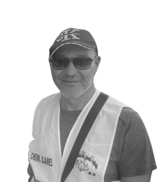

Qui sommes-nous
Cœur en Action est une ASBL bruxelloise qui vient en aide aux populations fragilisées en Belgique et à l'international.
Nous menons des programmes de développement avec les populations locales, selon une méthode participative. Nous organisons aussi des actions d'urgence pour les victimes de crises et soutenons les enfants en grande pauvreté.
Nous travaillons avec d'autres associations et institutions de bienfaisance, belges et internationales, qui partagent nos valeurs.


Transparence
Ce que nous faisons de votre argent, et comment vous pouvez le vérifier.
- Identité légale
Association sans but lucratif de droit belge, constituée le 20 janvier 2025 (statuts publiés aux annexes du Moniteur belge le 22 janvier 2025). N° d'entreprise : 1018.931.055. Siège : Rue Stroobants 62 bte 86, 1140 Evere.
- Comptes publiés
Nos comptes annuels sont déposés à la Banque nationale de Belgique. Lien et rapport d'activité à ajouter
- Part des dons sur le terrain
Pourcentage à fournir Ce chiffre sera calculé à partir des comptes annuels.
- Zakat séparée
Les dons de zakat sont suivis à part et réservés à ses bénéficiaires. Notre politique zakat s'aligne sur les avis du Conseil des imams de Belgique.
- Preuves en images
Chaque action est filmée ou photographiée et publiée sur nos réseaux et sur ce site.
- Gouvernance
Président et membres du conseil d'administration à ajouter
Questions fréquentes
Mon don est-il déductible des impôts ?
Seules les associations agréées par le SPF Finances peuvent délivrer une attestation fiscale. Statut d'agrément de l'ASBL à confirmer Si l'ASBL est agréée, un don de 40 € ou plus sur l'année donne droit à une réduction d'impôt de 30 %.
Comment arrêter ou modifier mon don mensuel ?
Envoyez un e-mail à coeurenaction@hotmail.com ou appelez-nous : nous l'arrêtons ou le modifions sans question.
Le paiement en ligne est-il sécurisé ?
Oui. Le paiement est géré par un prestataire agréé : vos données bancaires ne passent jamais par notre site et nous n'y avons pas accès.
Puis-je donner au nom d'un proche décédé ?
Oui. Choisissez « Sadaqa jariya » et indiquez son nom : il figurera sur votre reçu.
Vie privée
Nous utilisons vos coordonnées uniquement pour traiter votre don, vous envoyer votre reçu et, si vous l'avez demandé, des nouvelles du terrain. Nous ne les vendons ni ne les cédons à personne. Le numéro de registre national n'est demandé que pour l'attestation fiscale et n'est transmis qu'au SPF Finances. Ce site n'utilise aucun traceur publicitaire. Pour consulter ou supprimer vos données : coeurenaction@hotmail.com.
Texte à faire valider par l'association